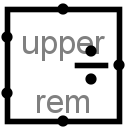

除法器
除法器
| 所属库： | 算术 |
| 引入版本： | 2.0 Beta 22 |
| 外观： |
 |
行为
该组件将来自西侧输入的两个值相除，并在东侧输出商。它可以与其他除法器级联，以支持超过单个除法器位宽的被除数：上侧输入提供被除数的高 dataBits 位（如果指定），而 rem 输出提供余数，可作为另一个除法器的 upper 输入。
如果除数为 0，则不执行除法（即假定除数为 1）。
除法器本质上执行无符号除法。也就是说，余数始终在 0 到 divisor-1 之间。商始终为整数，因此
然而，如果 quotient 无法容纳在 dataBits 位中，则仅报告低 dataBits 位。该组件不提供访问高 dataBits 位的方法。
如果任一操作数包含某些浮空位或错误位，则组件的输出将完全为浮空值或完全为错误值。
引脚
- 西侧边缘，北端（输入，位宽与 数据位宽 属性一致）
- 被除数的低 dataBits 位（即除法的第一个操作数）。
- 西侧边缘，南端（输入，位宽与 数据位宽 属性一致）
- 除数（即除法的第二个操作数）
- 北侧边缘，标记为 upper（输入，位宽与 数据位宽 属性一致）
- 被除数的高 dataBits 位（即除法的第一个操作数）。
- 东侧（输出，位宽与 数据位宽 属性一致）
- 商的低 dataBits 位，如上所述。
- 南侧，标记为 rem（输出，位宽与 数据位宽 属性一致）
- 除法的余数。该值始终介于 0 与 divisor-1 之间。
属性
当组件被选中或正在放置时，Alt-0 至 Alt-9 可更改其 数据位宽 属性。
- 数据位宽
- 被除数值和结果的位宽。
手形工具行为
无。
文本工具行为
无。
返回 库参考